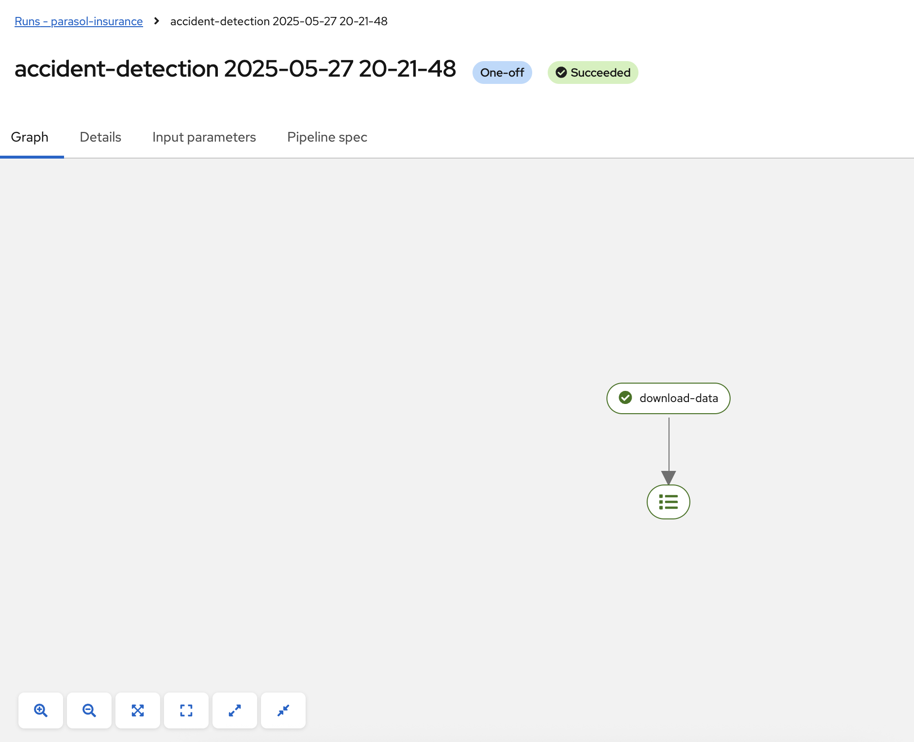
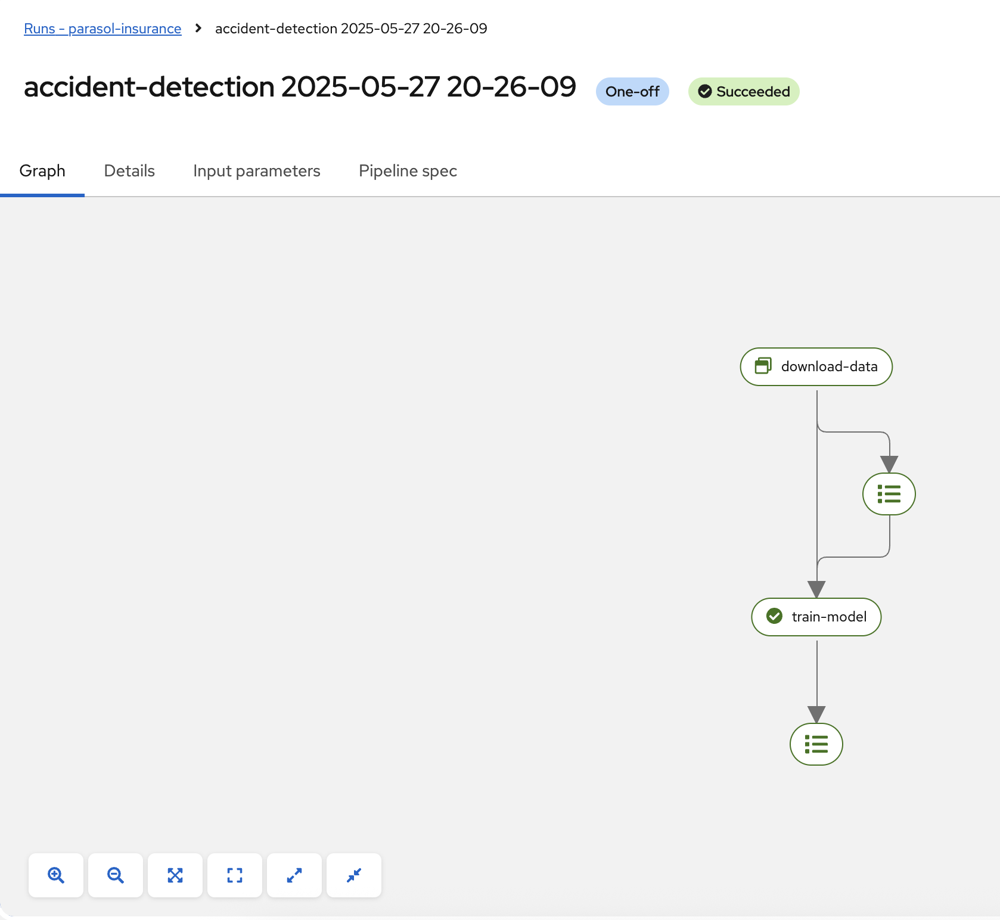
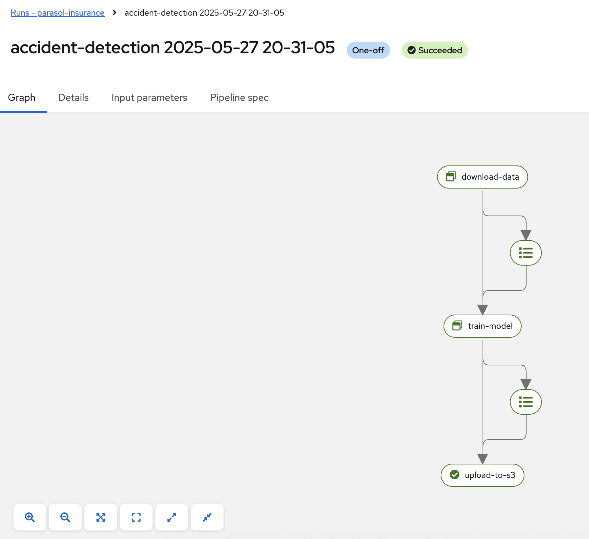
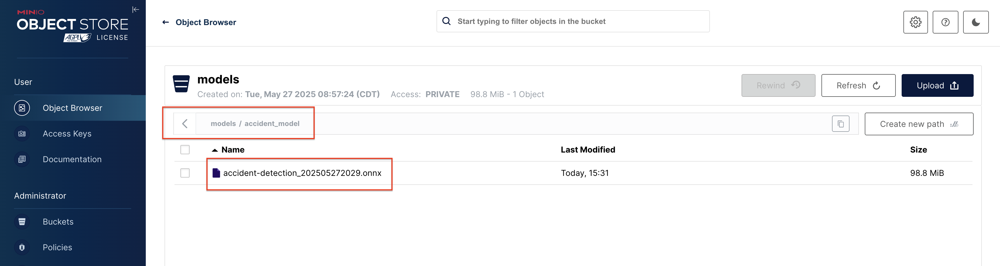
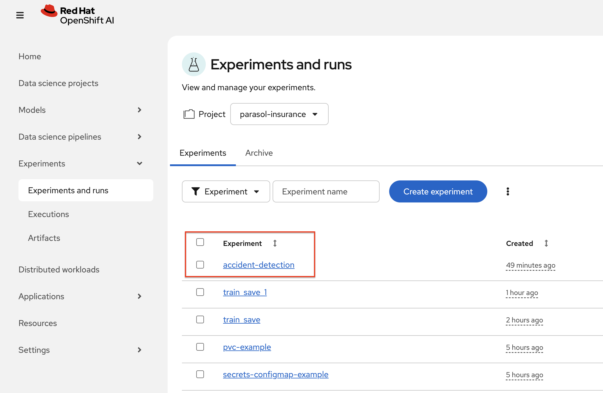
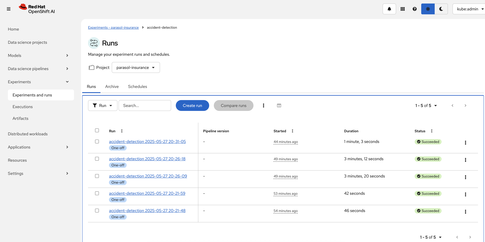

Working with Pipelines
In this module we will be working with pipelines. We will be creating a pipeline that will train a model and then deploy it to a serving runtime.
Develop a KFP pipeline to retrain a model
In the parasol-insurance repository, there is a python notebook that re-trains a model: 04-03-model-retraining.ipynb. We will be using this notebook to create a pipeline that will retrain the model.
-
In RHOAI, open the standard-workbench.
-
Create a new notebook and name it
model-retraining-pipeline. -
Start the notebook with a cell to import the packages neccesary to work with
kfppipelines sdk:Solution
import kfp.compiler from kfp import dsl -
Add a cell to define the kubeflow endpoint, and the image that will be used to create containers that will execute each task:
Solution
KUBEFLOW_ENDPOINT = 'https://ds-pipeline-dspa.parasol-insurance.svc.cluster.local:8443' PYTHON_IMAGE = 'image-registry.openshift-image-registry.svc:5000/openshift/python:latest' -
Add a cell to define the task that will download the dataset (see the
retrieve_datasetfunction defined at 04-03-model-retraining.ipynb)Solution
@dsl.component( base_image=PYTHON_IMAGE, packages_to_install=["requests", "zipp"], ) def download_data(dataset_type: str, datasets: dsl.Output[dsl.Dataset]): import requests import zipfile URL = f"https://rhods-public.s3.amazonaws.com/sample-data/accident-data/accident-{dataset_type}.zip" print("Downloading file...") response = requests.get(URL, stream=True) block_size = 1024 with open(f'./accident-{dataset_type}.zip', 'wb') as f: for data in response.iter_content(block_size): f.write(data) print("Unzipping file...") with zipfile.ZipFile(f'./accident-{dataset_type}.zip', 'r') as zip_ref: zip_ref.extractall(path=datasets.path) print("Done!")Notice the output dataset parameter (
datasets: dsl.Output[dsl.Dataset]), and how we use the path of such dataset to unzip the contents of the downloaded dataset. -
Create a cell to define the pipeline, and use the previously defined task.
Solution
@kfp.dsl.pipeline( name="Accident Detection", ) def accident_detection_pipeline(model_obc: str = "accident-detection"): download_data(dataset_type="sample") -
Create a cell to connect to the
KUBEFLOW_ENDPOINT, and create your pipeline run:Solution
print(f"Connecting to kfp: {KUBEFLOW_ENDPOINT}") import os bearer_token = "sha256~P0wEh46fxWa4uzPKR-b3fhcnsyXvCju4GovRd2YNNKM" sa_ca_cert = "/run/secrets/kubernetes.io/serviceaccount/service-ca.crt" if os.path.isfile(sa_ca_cert) and "svc" in KUBEFLOW_ENDPOINT: ssl_ca_cert = sa_ca_cert else: ssl_ca_cert = None client = kfp.Client( host=KUBEFLOW_ENDPOINT, existing_token=bearer_token, ssl_ca_cert=ssl_ca_cert, ) result = client.create_run_from_pipeline_func( accident_detection_pipeline, arguments={}, experiment_name="accident-detection")Provide your own token, you can find the token in the OpenShift Web Console by clicking on your username in the top right corner and selecting
Copy Login Command. -
Save and run your notebook.
-
Validate that the pipeline is running, using the RHOAI dashboard, navigate to the pipeline runs of the parasol-insurance data science project: You should find a run with a name starting with accident-detection
 -
Create a cell to train the model, organize this cell to appear before the cell that defines the pipeline (
@kfp.dsl.pipeline). The contents of this cell were crafted after from a combination of functions from 04-03-model-retraining.ipynb; we recommend you to compare this cell with the original notebook contents:Solution
@dsl.component( base_image=PYTHON_IMAGE, packages_to_install=["ultralytics", "opencv-contrib-python-headless"], ) def train_model(datasets: dsl.Input[dsl.Dataset], model_onnx: dsl.Output[dsl.Model]): import os import shutil import datetime from ultralytics import YOLO print("setting the symlink for the datasets") os.symlink(datasets.path, "/opt/app-root/src/datasets") # Load model print("using a base model to start the training") model = YOLO('yolov8m.pt') # load a pretrained model (recommended for training) print("training the model") model.train(data=f'{datasets.path}/accident-sample/data.yaml', epochs=1, imgsz=640, batch=2) print("saving the file as onnx") # create runs/detect/train/weights/best.onnx YOLO("/opt/app-root/src/runs/detect/train/weights/best.pt").export(format="onnx") # save runs/detect/train/weights/best.onnx as {model_onnx.path}/accident-detection_{timestamp}.onnx timestamp = datetime.datetime.now().strftime("%Y%m%d%H%M") os.makedirs(model_onnx.path, exist_ok=True) shutil.copy('/opt/app-root/src/runs/detect/train/weights/best.onnx', f'{model_onnx.path}/accident-detection_{timestamp}.onnx')Notice here the use of the
shutilpackage to copy from the default output directory from the YOLO package to the output path of ourmodel_onnxoutput parameter. -
Add the
train_modeltask to the pipeline:Solution
@kfp.dsl.pipeline( name="Accident Detection", ) def accident_detection_pipeline(model_obc: str = "accident-detection"): download_data_task = download_data(dataset_type="sample") train_model(datasets=download_data_task.output)Notice how we use the output of the
download_datatask as the input of thetrain_modeltask. -
Save and run your notebook.
-
Validate that the pipeline is running, using the RHOAI dashboard, navigate to the Experiments → Experiments and runs: You should find a run with a name starting with accident-detection
 -
Create a cell to upload the model to s3 using the
boto3package, organize this cell to appear before the cell that defines the pipeline (@kfp.dsl.pipeline):Solution
@dsl.component( base_image=PYTHON_IMAGE, packages_to_install=["boto3"], ) def upload_to_s3(model_onnx: dsl.Input[dsl.Model]): import os import boto3 from botocore.client import Config print("configuring s3 instance") # Configuration minio_url = "http://minio.object-datastore.svc.cluster.local:9000" access_key = "minio" secret_key = "minio123" # Setting up the MinIO client s3 = boto3.client( 's3', endpoint_url=minio_url, aws_access_key_id=access_key, aws_secret_access_key=secret_key, config=Config(signature_version='s3v4'), ) for (dirpath, dirnames, filenames) in os.walk(model_onnx.path): for file in filenames: print(f"uploading file {dirpath}/{file}") s3.upload_file(f"{dirpath}/{file}", "models", f"accident_model/{file}") -
Add the
upload_to_s3task to the pipeline.Solution
@kfp.dsl.pipeline( name="Accident Detection", ) def accident_detection_pipeline(model_obc: str = "accident-detection"): download_data_task = download_data(dataset_type="sample") train_model_task = train_model(datasets=download_data_task.output) upload_to_s3(model_onnx=train_model_task.outputs["model_onnx"]) -
Save and run your notebook.
-
Validate that the pipeline is running, using the RHOAI dashboard, navigate to Experiments → Experiments and runs: You should find a run with a name starting with accident-detection
 -
Validate that the model is uploaded to the s3 bucket, by navigating to the s3 bucket in the minio console.
 -
Validate the resulting script: The script should look like this: train-car-rekon.py
Create a pipeline to train a model
-
Create a
model-training-pipelinedirectory in theparasol-insurancetenants directory. -
Create the
baseandoverlaysdirectories in themodel-training-pipelinedirectory. -
In the
basedirectory, create akustomization.yamlfile with the following content:Solution
apiVersion: kustomize.config.k8s.io/v1beta1 kind: Kustomization namespace: parasol-insurance resources: - model-retrain-imagestream.yaml - model-retrain-pipeline.yaml - model-retrain-pipelinerun.yaml - execute-kfp-task.yaml -
Create file
tenants/parasol-insurance/model-training-pipeline/base/model-retrain-imagestream.yaml.Solution
tenants/parasol-insurance/model-training-pipeline/base/model-retrain-imagestream.yamlapiVersion: image.openshift.io/v1 kind: ImageStream metadata: name: model-retrain -
Create file
tenants/parasol-insurance/model-training-pipeline/base/model-retrain-pipeline.yaml.Solution
tenants/parasol-insurance/model-training-pipeline/base/model-retrain-pipeline.yamlapiVersion: tekton.dev/v1 kind: Pipeline metadata: name: model-retrain spec: params: - default: 'https://github.com/redhat-ai-services/ai-accelerator-bootcamp.git' description: Repo URL name: GIT_URL type: string - default: 'source_code/40_pipelines' description: Repo URL name: CONTEXT type: string - default: 'train-car-rekon.py' name: PIPELINE_SCRIPT type: string - default: main name: GIT_REVISION type: string - default: 3.11-ubi9 name: PYTHON_IMAGE type: string - default: 'image-registry.openshift-image-registry.svc:5000/parasol-insurance/model-retrain' name: TARGET_IMAGE type: string - default: 'https://ds-pipeline-dspa.parasol-insurance.svc.cluster.local:8443' name: KUBEFLOW_ENDPOINT type: string tasks: - name: git-clone params: - name: URL value: $(params.GIT_URL) - name: REVISION value: $(params.GIT_REVISION) taskRef: resolver: cluster params: - name: kind value: task - name: name value: git-clone - name: namespace value: openshift-pipelines workspaces: - name: output workspace: source - name: s2i-python params: - name: VERSION value: $(params.PYTHON_IMAGE) - name: CONTEXT value: $(params.CONTEXT) - name: IMAGE value: $(params.TARGET_IMAGE) runAfter: - git-clone taskRef: resolver: cluster params: - name: kind value: task - name: name value: s2i-python - name: namespace value: openshift-pipelines workspaces: - name: source workspace: source - name: execute-kubeflow-pipeline params: - name: IMAGE value: $(params.TARGET_IMAGE) - name: TAG value: latest - name: SCRIPT value: $(params.PIPELINE_SCRIPT) - name: KUBEFLOW_ENDPOINT value: $(params.KUBEFLOW_ENDPOINT) runAfter: - s2i-python taskRef: kind: Task name: execute-kubeflow-pipeline workspaces: - name: source -
Create file
tenants/parasol-insurance/model-training-pipeline/base/model-retrain-pipelinerun.yaml.Solution
tenants/parasol-insurance/model-training-pipeline/base/model-retrain-pipelinerun.yamlapiVersion: tekton.dev/v1 kind: PipelineRun metadata: name: model-retrain-init annotations: argocd.argoproj.io/sync-wave: "10" spec: pipelineRef: name: model-retrain taskRunTemplate: serviceAccountName: pipeline timeouts: pipeline: 1h0m0s workspaces: - name: source volumeClaimTemplate: spec: accessModes: - ReadWriteOnce resources: requests: storage: 1Gi volumeMode: Filesystem -
Create file
tenants/parasol-insurance/model-training-pipeline/base/execute-kfp-task.yaml.Solution
tenants/parasol-insurance/model-training-pipeline/base/execute-kfp-task.yamlapiVersion: tekton.dev/v1 kind: Task metadata: name: execute-kubeflow-pipeline spec: description: >- This task will execute a python script, triggering a kubeflow pipeline params: - name: IMAGE description: The image used to execute the script type: string - name: TAG description: The tag for the image type: string default: "latest" - name: SCRIPT description: The name of the script to be executed - name: KUBEFLOW_ENDPOINT description: The endpoint URL for Kubeflow default: "https://ds-pipeline-dspa:8443" steps: - name: execute-python image: $(inputs.params.IMAGE):$(inputs.params.TAG) env: - name: KUBEFLOW_ENDPOINT value: $(inputs.params.KUBEFLOW_ENDPOINT) script: | python $(inputs.params.SCRIPT) -
In the
overlaysdirectory, create aparasol-insurance-devdirectory. -
In the
parasol-insurance-devdirectory, create akustomization.yamlfile.Solution
tenants/parasol-insurance/model-training-pipeline/overlays/parasol-insurance-dev/kustomization.yamlapiVersion: kustomize.config.k8s.io/v1beta1 kind: Kustomization resources: - ../../base -
Commit and push the changes to the Git repository.
-
Wait for ArgoCD to sync the changes.
-
Navigate to the OpenShift console, and validate that the
model-retrainpipeline is available in theparasol-insurancenamespace. -
Click on the
model-retrainpipeline, and validate that there is a pipeline run, wait the pipeline run to complete -
Navigate to the RHOAI dashboard → Experiments → Experiments and runs: You should find a run with a name starting with accident-detection
Validate your code against Branch for model_retrain pipeline config
The
model-retrain-pipeline.yamlrefers previously mentioned train-car-recon.py, which uploads model file to S3 and expects that the bucket namedmodelsalready exists. You can verify this in MinIO web interface and if necessary create missing bucket from there.
Experiments
A pipeline experiment is a workspace where you can try different configurations of your pipelines. You can use experiments to organize your runs into logical groups.
Experiments and Runs
-
Navigate to RHOAI Dasboard, click on Experiments > Experiments and Runs. Validate that new experiment
accident_detectionis created -
Click on the experiment
accident_detectionto view pipeline runs. -
Click on each pipeline run to view more details.
-
We can schedule periodic pipeline runs for an experiment. Click on 'Schedules'. Click on 'Create Schedule'. Please fill following details:
-
Experiment: We can choose an existing Experiment or create a new Experiment.
-
Name: Name for the schedule
-
Trigger Type: Periodic
-
Run Every: 1 hour
-
Start Date: Start date for the schedule
-
End Date: End Date for the schedule
-
Pipeline: Name of the pipeline
-
Pipeline version: Version of the pipeline
-